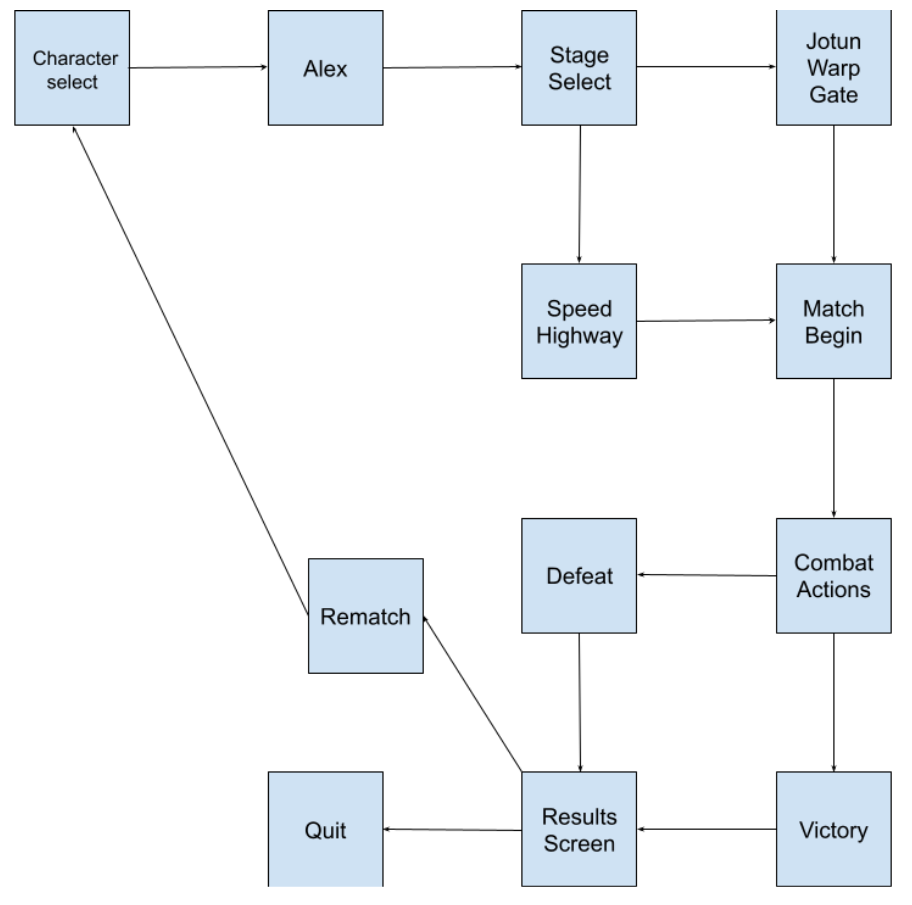

FrostFyte is a multiplayer platform fighting game, which draws inspiration from genre contemporaries like Super Smash Bros. and Rivals of Aether. The game involves players fighting on a stage, a platform surrounded on all sides by invisible areas called blast zones. The goal is to use your abilities to launch your opponents into said blast zones, with the distance they’re launched increasing as you continue to damage them.
1.2 Scope of ProductThe game includes two stages, a character, and a variety of moves to use to ensure victory over your opponents.
1.3 Acronyms, Abbreviations, DefinitionsThere are no significant acronyms or abbreviation necessary to understand our documentation. However, some jargon from the platform fighter community may be seen.
1.4 ReferencesA variety of jargon can be found and defined in this article, which covers mostly every significant term that may be used in future documentation.
FrostFyte will exist as a low-budget platform fighter within the larger community of platform fighters.
2.2 Domain Model and Description
This is a model of all the states the player can enter during a session of FrostFyte. The game starts with the players choosing a character, then a stage, then proceeding to combat. From there, a number of actions can occur that determine the victor and loser of each match. Once this result is displayed, the players can either play again, or quit the application.
2.3 Product FunctionsFrostFyte functions as a form of entertainment for fans of the platform fighter genre. It is intended to provide a new experience to fans of competitive games, while maintaining the charm and soul of iconic platform fighters.
2.4 User Characteristics and ExpectationsFrostFyte users are expected to consist of platform fighter fans, which vary in skill and knowledge from fledgeling newcomers to experienced veterans. This means that FrostFyte must account for a variety of players, by creating a system that’s easy to understand, but difficult to master.
2.5 ConstraintsFrostFyte users are expected to consist of platform fighter fans, which vary in skill and knowledge from fledgeling newcomers to experienced veterans. This means that FrostFyte must account for a variety of players, by creating a system that’s easy to understand, but difficult to master.
2.6 Assumptions and DependenciesOur system does rely on the pre-existing Game Maker and Platform Fighter Engine, although no programs outside of the executable are properly required to run the software. As of right now, our demos are designed exclusively with Windows in mind.
Our user stories can be found here.
Our system has a variety of UI elements necessary for character select, stage select, and pause options.
4.2 Performance RequirementsFrostFyte is not an performance-intensive project. As a small-scale project with mostly relatively simple code & visual elements, FrostFyte should run reasonably well on any modern computer with Windows.
4.3 Design ConstraintsOur primary constraint in the design of FrostFyte is simply the lack of time. As of today, we have approximately a month to complete development, which means we’ll need to work efficiently to complete our goals.
4.4 Quality RequirementsAs a small project in an inherently complex genre, FrostFyte is intended to serve more as a proof-of-concept than a final product. Because of that, and the fact that the game is intended purely for entertainment, it is not expected that the quality expectations of our users will be high.